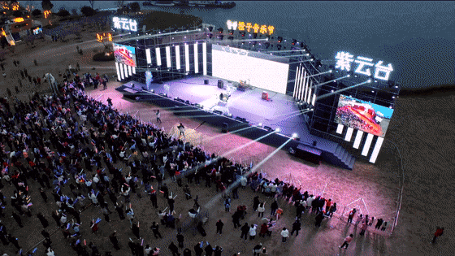
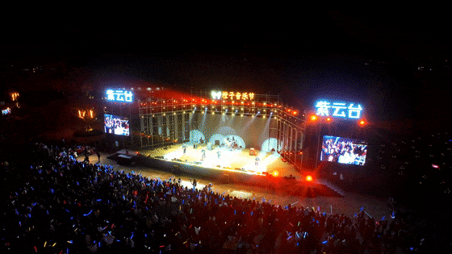
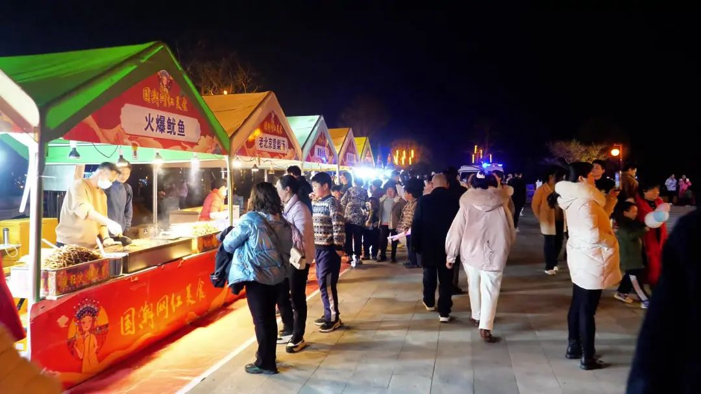
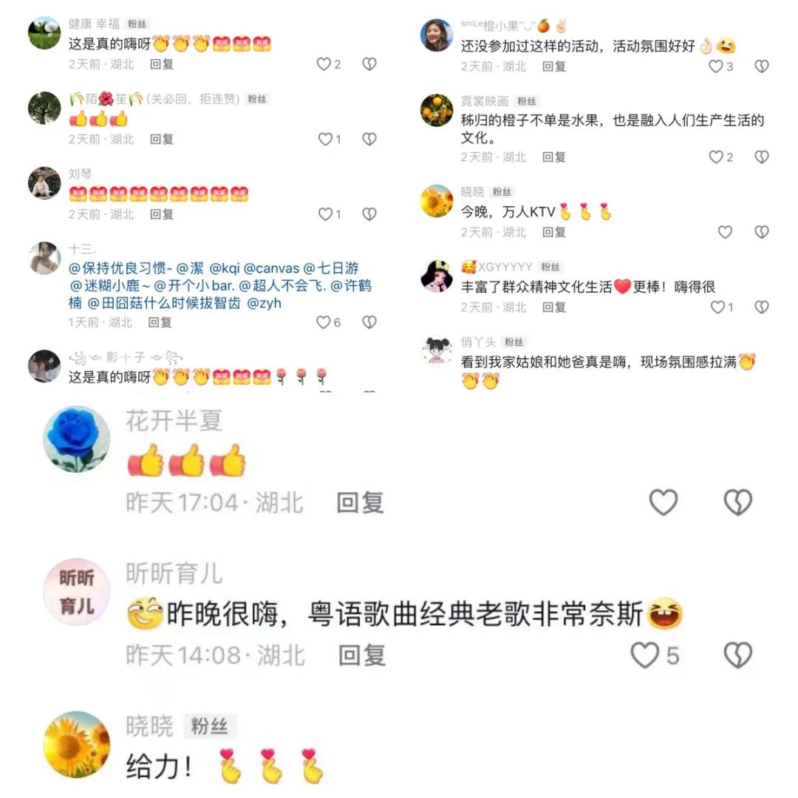

回复
-
- 查看全部{{ item.replyCount }}条回复> 查看更多回复>
- 查看更多回复>
3月8日至10日，“乐莫乐兮”新春文化活动季橙子音乐节如约而至。乐迷们从全国各地蜂拥而来，相约秭归县木鱼岛天问公园，共赴一场音乐盛宴。
3个专场
万千乐迷同频欢唱
这3天里，动感、怀旧、少儿三场主题音乐节轮番上阵。
3月8日傍晚，音乐节表演伴随着阵阵欢呼声炫酷开场，活力四射的说唱、打碟，瞬间调动起在场观众全身的“音乐分子”。首场“活力之城 动感新春”演出，邀请到Eclipse Echoes、撞克Drunk乐队、马格南乐队以及秭归本土邓正伟等新锐歌手，现场带来一首首流行金曲。唢呐、电子琴声张狂，电吉他激昂，现场音浪一阵高过一阵。
0%
3月9日第二场“怀旧经典 岁月之歌”专场，在《红日》的歌声中拉开序幕，表演嘉宾：谭歌（谭小宝）内地女歌手，带着代表作《你为了那个女人抛弃了我》《是否把我忘记》《别怕》率先开唱。《海阔天空》的歌声在现场响起的瞬间，属于“60后”“70后”“80后”的记忆又再次激活。30首耳熟能详的经典老歌，引来全场“大合唱”。
最后一场“唱响秭归 萌娃迎春”专场，街舞、音乐剧、表演唱、朗诵、武术……一群小演员纷纷欢歌起舞，节目新奇而又灵动。
台上霓虹闪烁，台下人潮涌动，歌声、掌声、欢呼声让微风凉凉的夜迸发出似火热情。


屈原的家乡秭归，怎么能少得了诗词？舞台边的诗歌长廊流光绚烂，满天星瀑布灯、诗词树、波纹涌动的诗词题壁，漫步其中，仿佛穿越到异域时空，让游人和乐迷在流光溢彩的诗词灯下感受秭归独特的浪漫。
“大家共同狂欢，要的就是这种感觉。”看到预告，宜都市乐迷雷娜特地前来感受音乐节的魅力，她直呼现场的氛围令她震撼。
“零门槛”
一场全民音乐盛宴
自2022年首届橙子音乐节“燃爆”木鱼岛天问公园以来，今年已是举办的第二届。
在音乐会现场，观众或轻轻摇摆，或席地而坐。宜人的天气，放松的心情，动人的歌曲，伴随着荡漾的江水舒缓入耳，小孩子们则在草坪上嗨翻了天。

不用预约，无需门票，在家门口“零门槛”就能免费享受这座城市赋予的公共文化资源，这让橙子音乐节更加接地气。
“以前，音乐节通常只能在一线大城市见到，而如今咱们秭归人在家门口就能参加了。”一大批秭归市民早早吃完晚饭，争相汇聚木鱼岛天问公园。
现场，表演者与市民、游客频繁互动。“现场看就是不一样，歌手们的表现超有魅力！”秭归市民彭可难掩激动。
橙子音乐节上还有本地原创作品，现场观众跟随歌声了解秭归鲜香的脐橙、巍峨的三峡大坝和行吟在江畔的三闾大夫……
“接地气，我们都乐在其中，非常难得。”宜昌城区游客徐佳佳带着家人来到秭归，前来体验音乐节，一边观看、一边拿出手机拍照发朋友圈。
而在音乐节的外围，集市也成了市民们的“心头好”。人们在脐橙深加工产品、中华红橙、茶叶、土蜂蜜等摊位前聚集，吃、喝、玩、赏，热闹非凡。
橙子音乐节3天的连续演出，吸引3万余人次现场观看。抖音、视频号直播平台上，网友们热情点赞留言，反响热烈。

“音乐节的下沉受到观众的青睐，是市民精神文化需求的集中体现。”活动主办方秭归融媒文化传播有限责任公司负责人王雷蕾介绍，此次音乐节是提升城市内涵的生动实践，将致力于把橙子音乐节打造成秭归县全民文化品牌。
以节为媒
古老之城再次“出圈”
3月，是秭归“橙”熟季节。红肉、伦晚等多品种脐橙挂满枝头，传递出丰收的喜悦。而音乐节是自由与浪漫的代名词，这与屈原诗歌传递的精神追求不谋而合。屈原文化、秭归脐橙这些元素也成为这场音乐节接住“流量”的底气。
“秭归是伟大爱国诗人屈原的故乡，秭归盛产脐橙，音乐节命名为‘橙子音乐节’，浪漫而又真实。”从荆州来秭归参加音乐节的张娜如此感慨。
作为屈原出生地的秭归县，通过端午文化节、脐橙文化节、中国农民诗会、香草美人节等以节会友，向全国各地发出了一张张浪漫“邀请函”，让全国各地的朋友邂逅了一座城，也点燃了一座城。
“我们去屈原祠、芝茅路打卡，到水田坝摘橙子，吃脐橙宴，玩得很开心，下次还想来，更要介绍给朋友们来！”有很多像仙桃游客薛丽薇这样的乐迷，专程来此打卡、拍照、晒圈、美食、观景，还通过分享，让身边的朋友重新认识这座城市。
“为一场音乐节赴一座城”，是当下年轻人的旅游新选择。举办音乐节不仅是文化氛围的体现，更是城市对外展现形象的最好方式。薛丽薇还说：“屈原的故乡是古老的，也是青春活力的。”
3天的音乐节，也带动了秭归周边酒店爆满，餐饮、购物等旅游消费业绩翻番。
“屈原文化、脐橙产业与音乐节的碰撞，对秭归来说，不只是贴上了潮流时尚的新标签，也是文娱产业、文旅产业与农业经济融合的跨界探索。”秭归县政府党组成员吴雄介绍，秭归县将积极引导支持市场化的文旅活动，持续扩大秭归城市声量。
橙子音乐节，是一次聚会，也是一种追求，相信秭归之美可以布播天下，引来四海知音。